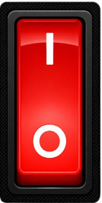
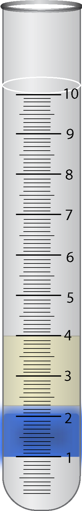
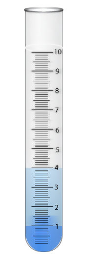
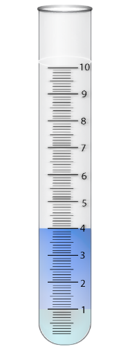
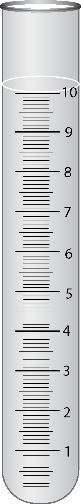
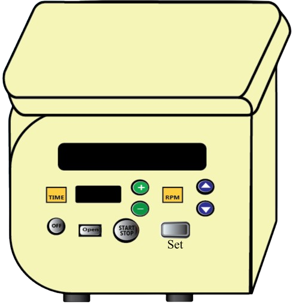
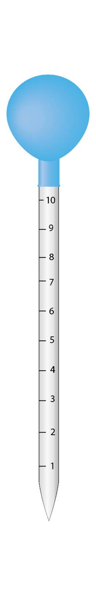

SET
MEN
RUN
RPM:
0000
Time:
00:00
Observation Table
| Sample | Color Observation | Detergent Adulteration |
|---|---|---|
| A | More intense blue color in lower layer | Yes |
| B | More intense blue color in upper layer | No |
Inference
- Relatively more intense blue color in lower layer indicates presence of detergent in milk.
- Relatively more intense blue color in upper layer indicates absence of detergent in milk.

Dairy Technology Lab
Instruction:- Observe the apparatus setup





